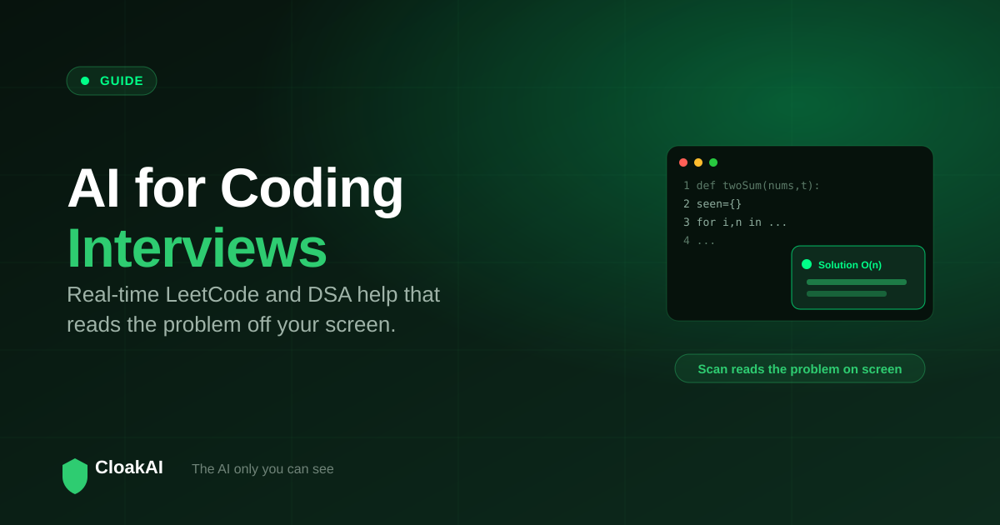
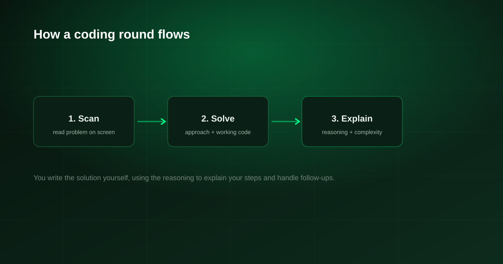

Coding interviews are their own kind of pressure. A single unfamiliar data-structure question can sink an otherwise strong candidate, which is why so many people search for AI for coding interviews and a LeetCode AI assistant. The useful tools do two things a chat window cannot: they read the problem straight off your screen, and they produce a real-time solution you can reason through. This guide covers what to look for, and how to do it without being visible on screen share.
The best real-time coding interview AI can scan the problem on your screen (LeetCode, HackerRank, CoderPad or a shared doc) and generate a worked solution with explanation, while staying invisible on your screen share. CloakAI does exactly this: an on-screen scan for coding questions and MCQs, plus a native overlay hidden by OS-level content protection. Free for 20 minutes to try.
Why Coding Interviews Need a Different Kind of AI
General chat tools are awkward in a live coding round. You would have to retype the whole problem, copy constraints and examples, and do it fast enough that no one notices. That is not realistic when a timer is running and your screen is shared. A coding-focused interview AI removes that friction in two ways:
- It reads the screen. Instead of retyping, you scan the visible problem and the tool captures the prompt, constraints and examples directly.
- It answers in real time. You get a solution approach, working code and a short explanation quickly enough to use in the moment, not five minutes later.
What to Look For in a Coding Interview AI
On-screen problem scanning
The single most important feature. If the tool cannot read the problem off your screen, you are back to retyping under pressure. CloakAI's Scan reads a coding problem, aptitude question or MCQ directly from what is on screen.
Explanations, not just answers
An answer you cannot explain is a liability, because interviewers ask follow-ups. A good tool gives you the reasoning and the complexity, so you can talk through the solution as if it were your own thinking.
Invisibility on screen share
Coding rounds almost always involve sharing your screen or working in a shared editor. A browser-based helper can be captured in that share. A native app with content protection is not, which is why the architecture matters as much as the model.

New here? Try every feature free for 20 minutes, no signup and no card needed.
Try CloakAI for free 20-minute free trial · No credit card required · Windows 10 & 11How CloakAI Handles a Coding Round
In a technical interview, the flow is straightforward. The problem appears on your screen in LeetCode, HackerRank, CoderPad or a shared document. You trigger the scan, and CloakAI reads the question. Within moments the overlay shows an approach, working code and a plain-language explanation of why it works, including the time and space complexity. The overlay is always on top for you and invisible in the screen you share. You then write the solution yourself in the editor, using the reasoning to explain your steps and handle follow-ups.
| Capability | Chat tool (ChatGPT tab) | CloakAI |
|---|---|---|
| Reads the problem off your screen | ✗ Retype it | ✓ Scan |
| Real-time solution and explanation | ⚠ Slow, manual | ✓ |
| Time and space complexity | ✓ | ✓ |
| Invisible on screen share | ✗ Browser tab visible | ✓ Content protection |
| Works on LeetCode, HackerRank, CoderPad | ⚠ Manual | ✓ Scan any |
| Free to try | ✓ | ✓ 20 min full |
The winning move in a coding round is not having the answer appear, it is understanding it fast enough to write it yourself and defend it. A good coding AI buys you that understanding under time pressure.
Not ready to buy? Test every one of those features free for 20 minutes first.
Try CloakAI for free 20-minute free trial · No credit card required · Windows 10 & 11Use It to Learn, Not Just to Pass
The strongest way to use AI for coding interviews is as a real-time tutor. When a problem stumps you, seeing a clean solution with its reasoning teaches you the pattern, so the next similar question is one you handle on your own. Candidates who treat it this way get better at DSA over a few weeks, not just through a single interview. Practise on LeetCode with the explanations, and let the live scan be your safety net rather than a crutch.
Final Verdict
For coding interviews, the AI that helps is the one that reads your screen, explains its solution, and stays invisible while you share. CloakAI is built for exactly that: scan the problem, get a worked answer and reasoning in real time, and keep the overlay out of your screen share. Try it free for 20 minutes on a practice problem and see how much calmer a coding round feels with a safety net you understand.
Line it up for your next interview and try the whole thing free for 20 minutes.
Try CloakAI for free 20-minute free trial · No credit card required · Windows 10 & 11